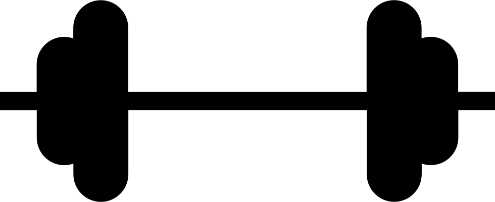

Info
om
mig
selv.
Jeg bor i Horsens og har egen bil.
Jeg har studeret på Learnmark Horsens HHX på innovationslinjen, hvilket jeg afsluttede i sommeren 2015.
Siden har jeg gennemført en personlig træner uddannelse, mens jeg sideløbende har arbejdet i Bilka i slagterafdelingen, og arbejer nu som sælger i Elgiganten.
Som person er jeg åben, lærenem og imødekommende.
Jeg spreder ofte smil blandt personerne i min omgangskreds.
I min fritid går jeg meget op i styrketræning, sund kost og en aktiv livsstil.
Fagligt har jeg gode og relevante IT-kompetencer.
Jeg har viden omkring bogholderi, økonomi og er desuden innovativ og nytænkende.
Min fremtidsdrøm er at blive politibetjent.
Arbejdsmæssigt er jeg vant til at møde og interagere med mange kollegaer og kunder.
Lige nu studere jeg multimedie design på Erhervsakademiet i Viby.
